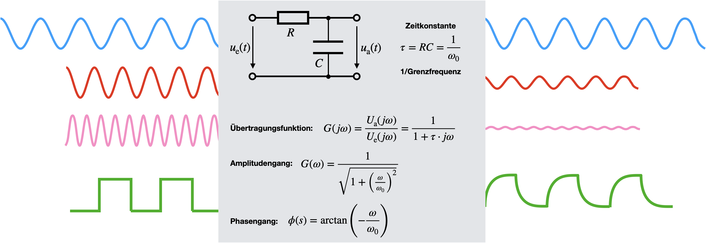
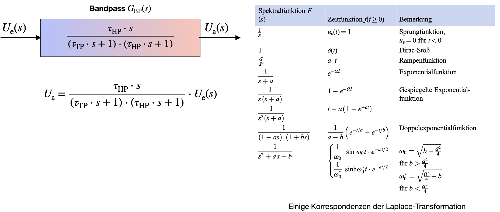
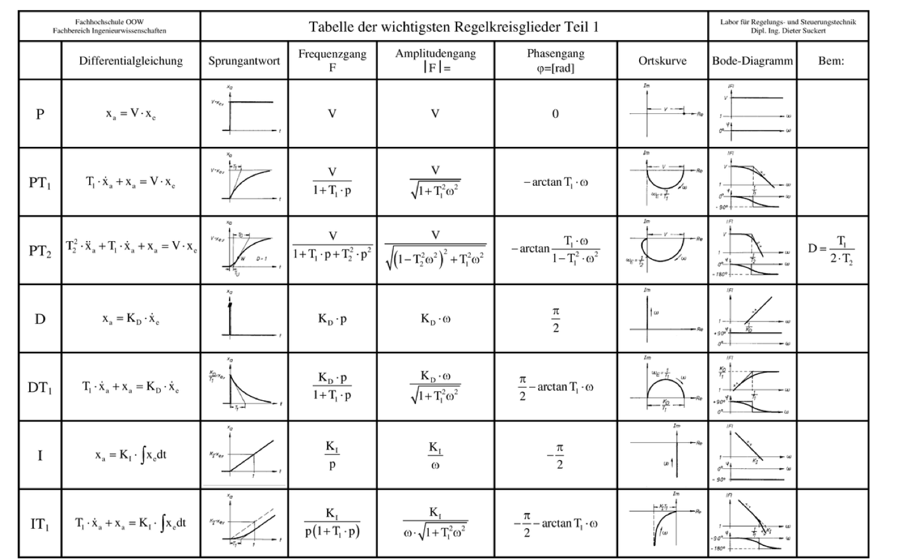

Übertragungsfunktion
Contents
Übertragungsfunktion#
Interpretation im Frequenzraum#
Als nächstes gucken wir uns dynamische Messsysteme im Frequenraum an. Aus den letzten Vorlesungen sollte bekannt sein, dass periodische Zeitserien in Fourierreihen umgeschrieben werden können. Nicht-periodische Funktionen können mittels Fourier-Transformation in den Frequenzraum transformiert werden. In beiden Fällen erhält man Auskunft darüber, welche Frequenzanteile in dem Signal vorhanden sind. Die Frequenzanteile weisen eine Amplitude und eine Phase auf und können auch in einem Phasordiagram oder Amplitudendiagram eingezeichnet werden.
Nicht nur Signale, sondern natürlich auch das Messsystem selber, kann in den Frequenz- oder eher den Laplace-Raum, transformiert werden. Wie sich das Messsystem im Frequenzraum verhält, wird über die sogenannte Übertragungsfunktion definiert. Die Übertragungsfunktion eines Systems ist das Verhältnis von Ausgangs- zu Eingangssinal. Das Eingangssignal kann mittels Fourier- oder Laplace-Transformation transformiert werden. Zur Erinnerung schreiben wir hier noch mal die Integrale, die für die Umrechnung benutzt werden:
Fourier-Transformation: \(\mathcal F(x(t)) = X(j\omega) = \int_{-\infty}^{\infty} x(t) \mathrm e^{-j \omega t} dt\)
Laplace-Transformaton: \(\mathcal L(x(t)) = X(s) = \int_{0}^{\infty} x(t) \mathrm e^{-st} dt\)
Wenn \(x(t)\) das Eingangssignal im Zeit-Raum ist, dann bezeichnen wir mit \(X(j \omega)\) das Eingangssignal im Frequenzraum. Hier ist \(j\) wieder die komplexe Zahl. Das Ausgangssignal \(y(t)\) wird analog dazu mit \(Y(j \omega)\) bezeichnet. Es hat sich eingebürgert, dass Zeitsignale mit kleinen Buchstaben, \(x\), bezeichnet werden und Signale im Frequenzbereich mit großen Buchstaben, \(X\).
Die Übertragungsfunktion, \(G(j \omega)\), kann also wiefolgt ausgedrückt werden:
Herleitung der Übertragungsfunktion#
Anhand unseres Beispiels, dem Tiefpass 1. Ordnung, wollen wir die Übertragungsfunktion einmal herleiten. Dazu gibt es verschiedene Ansätze.
1. Methode: Eine Möglichkeit die Übertragungsfunktion zu bestimmen, ist es die DGL aus dem vorherigen Kapitel in den Frequenzraum zu transformieren. Die DGL des Tiefpasses 1. Ordnung war gegeben durch:
Transformiere die Signale in den Frequenzraum. Der letzte Punkt resultiert aus den Eigenschaften von Fourier-Transformationen für zeitliche Ableitungen von Zeitsignalen.
\(u_\mathrm e (t) \rightarrow U_e(j \omega)\)
\(u_\mathrm a (t) \rightarrow U_a(j \omega)\)
\(\dot u_\mathrm a (t) \rightarrow j \omega U_a(j \omega)\)
In der DGL werden die Zeitsignale durch die Fourier-Transformierten ersetzt:
Die DGL wird nach \(U_\mathrm a(j \omega) / U_\mathrm e(j \omega)\) umgestellt, um die Übertragungsfunktion zu erhalten.
2. Methode: Sollte die DGL (noch) nicht bekannt sein, kann die Übertragungsfunktion auch direkt über die komplexen Widerstände bestimmt werden. Bei dem Tiefpass 1. Ordnung handelt es sich um die Reihenschaltung von Widerstand und Kondensator.
Die komplexe Ausgangsspannung wird über dem Kondensator abgegriffen, das heißt es gilt das ohm’sche Gesetz für komplexe Zahlen. \(\underline Z_C = \frac{1}{j\omega C}\) ist die Impedanz des Kondensators mit Kapazität \(C\) und \(\underline I\) der Strom.
Die komplexe Eingangsspannung liegt an kompletten Messsystem, also der Reihenschaltung an, d.h. es gilt
Die Division der beiden Spannungen führt abermals zur der gesuchten Übertragungsfunktion:
Die Zeitkonstante \(\tau = RC\) könnte nun noch in die Gleichung eingesetzt werden.
Bode Diagramm#
Nachdem wir nun die Übertragungsfunktion hergeleitet haben, wollen wir wissen, was wir aus dieser Funktion ableiten, bzw. von ihr lernen können. Zunächst einmal sehen wir, dass es sich um eine komplexe Zahl handelt. Wir für jede andere komplexe Zahl können wir also hier Amplitude und Phase bestimmen. Dazu formen wir \(G\) in die typische Schreibe einer komplexen Zahl um, sodass Real- (\(\mathrm{Re}\)) und Imaginärteil (\(\mathrm{Im}\)) direkt abgelesen werden können. Hierfür erweitern wir \(G\) typischer mit dem komplex Konjugierten:
Die Amplitude wird wiefolgt berechnet, wobei \(\tau = RC =: 1/\omega_0\)
Die Phase wird wiefolgt berechnet, wobei \(\tau = RC =: 1/\omega_0\)
Sowohl Amplitude als auch Phase hängen von der Frequenz \(\omega\) des eingehenden Signals ab! Daher nennt man die Fuktionen für Amplitude und Phase auch Amplitudengang bzw. Phasengang. Beide zusammengenommen bilden den Frequenzgang eines Systems und werden häufig zusammen geplottet, im sogenannten Bode-Diagramm. Eine solche Darstellung ist im folgenden Bild gezeigt:

Auch hier kann man, wie schon bei der Interpretation der Sprungantwort, Kenngrößen ablesen. Bei der Grenzfrequenz \(\omega_0 = 1/\tau\) fällt die Amplitude auf \(1/\sqrt{2} = 0,707 = -3\,\mathrm{dB}\) ab. Häufig werden Systeme anhand der Greqenzfrequenz charakterisiert. Man sollte aber nicht vergessen, dass bei Signalen mit diesen Frequenzanteilen bereits signifikante Verluste in Höhe von 29% zu erwarten sind, die eigentlich nicht tolerierbar sind. Je höher die Frequenz, desto höher die Verluste (bei dem hier dargestellten Tiefpassfilter!). Das heißt der Fehler, der bei einer Messung gemacht wird, ist frequenzabhängig!
In der Akustik kann man damit leben, kann man kaum hören den Unterschied In der Messtechnik bei der Überwachung von schwingenden Maschinenteilen oder der Ermittlung von Rundlaufabweichungen von drehenden Wellen ist solch ein Ampitudenabfall meist nicht zu akzeptieren. Üblicherweise sollte man andere Grenzfrequenzen separat angeben, die 90% oder 99% der Signalstärke durchlassen.
Sind die zeitbestimmenden Glieder (R und C) des Tiefpasses bestimmt, können wir daraus die Greqnzfrequenz bestimmen und somit den Verlust abschätzen.
Im Folgenden Bild grafisch dargestellt, wie verschiedene Signale durch einen Tiefpass verfälscht werden können, in dem hohe Frequenzanteile abgeschwächt werden. Auch hier erkennt man wieder einen Zusammenhang zu den Fourierreihen, wenn man sich das Rechtecksignal ansieht. Eine Reihe von Rechteckpulsen benötigt eine hohe Anzahl von Sinusfunktionen bei höheren harmonischen der Grundfrequenz, um möglichst steile Flankenübergänge zu erhalten. Eine Filterung dieser hohen Frequenzanteile sorgt für eine deutliche Verzerrung des Signals. Bei sinusförmirgen Signalen hingegen wird nur die Amplitude abgeschwächt und es findet zusätzlich, je nach Frequenz, eine zeitlich Verzögerung statt, d.h. die Signale sind phasenverschoben um bis zu -90°.

Kombination von Übertragungsfunktionen: Faltung im Frequenzraum#
Auch das hintereinanderschalten von Messsystemen ist im Frequenzraum viel einfacher zu berechnen als im Zeitraum. Eine Hintereinanderschaltung bedeutet allgemein nichts anderes, als die Faltung von Übertragungsfunktionen der jeweiligen Messsysteme. Im Zeitbereich müsste man hierzu das Faltungsintegral lösen. Im Frequenzraum ist die Faltung lediglich eine Multiplikation der Übertragungsfunktionen.
Als Beispiel soll uns ein Bandpass dienen, der aus der Hintereinanderschaltung eines Hoch- und Tiefpasses realisiert werden kann. Im Folgenden Bild sind die Komponenten des Tiefpasses (TP) blau dargestellt, die des Hochpasses (HP) rot dargestellt. Der Tiefpass lässt tiefe Frequenzen bis zu seiner Grenzfrequenz passieren (bis auf die 71% Signalverlust) und der Hoch lässt hohe Frequenzen bis zu seiner Grenzfrequenz passieren. Wir wählen C und R der beiden elektronischen Schaltungen so, dass die Grenzfrequenz der Hochpasses unterhalb der des Tiefpasses liegt, also \(f_\mathrm HP < f_\mathrm{TP}\). Der Amplitudengang ist rechts im folgenden Bild geplottet:

Wie eben schon beschrieben, können im Zeitraum die Übertragungsfunktionen der Einzel-Systeme (hier also Hochpass und Tiefpass) einfach multipliziert werden und man erhält die kombinierte Übertragungsfunktion des resultierenden Bandpasses. Wird die Übertragungsfunktionen in Einheiten von dB gezeichnet, also logarithmisch aufgetragen, so ergibt sich eine weitere grafische Vereinfachung bei der Kombination: In logarithmischen Einheiten können die einzelnen Übertragungsfunktionen in einem Amplitudengangs-Plot addiert (!) statt multipliziert werden.
Anlegen von Testfunktionen#
Nicht nur im Zeitraum können Sprünge oder Impulse angelegt werden. Für diese Testfunktionen können auch die Laplace, bzw. Fourier-Transformierten berechnet werden. Auch dies ist im Frequenzraum häufig einfacher, da die Testfunktionen, wie es in der Tabelle im folgenden Bild zu erkennen ist, sehr einfach sind.
Um das Verhalten unseres eben diskutierten Bandpasses auf verschiedene Eingangssignale zu untersuchen, können wir die gleichung der Übertragungsfunktion einfach nach \(U_\mathrm a\) auflösen. Das liefert uns im allgemeinen Fall eine Gleichung für das zu erwartende Ausgangssignal:
Wählen wir als Eingangssignal einen Dirac-Puls, \(\delta(t)\), um die Impulsantwort zu berechnen, so erhalten wir diese in dem wir für \(U_\mathrm e(s) = 1\). Dies ist einfach die Laplace-Transformierte eines Delta-Peaks.
Wählen wir als Eingangssignal einen Sprung, möchten also die Sprungantwort bestimmen, so setzen wir in die Gleichung \(U_\mathrm e(s) = 1/s\), die Laplace-Transformierte einer Sprungfunktion.
Auch hierbei handelt es sich wieder um Faltungen im Frequenzraum, deren Berechnungen im Zeitbereich sehr viel komplizierter wären.
aus Übertragungsfunktionen können noch weitere Eigenschaften von Messsystemen abgeleitet werden, auf die wir hier nicht näher eingehen können. Aus den Nullstellen und Polstellen kann aber abgelesen werden, ob das System stabil ist, sprungfähig ist oder eher ein integrales Verhalten aufweist.

Verhalten von Systemen 2. Ordnung#
Der Vollständigkeitshalber wollen wir uns noch ganz kurz die Bode-Diagramme von Systemen 2. Ordnung ansehen. Auf eine mathematische Beschreibung wollen wir an dieser Stelle aber verzichten.
Bei Systemen 1. Ordnung handelt es sich um Systeme mit Energiespeicher, also alle Systeme die irgendwie warm werden. Bei Systemen 2. Ordnung hat man zwei gekoppelte Energiespeicher, die Energie unter Umständen periodisch austauschen können. Hier findet man dann immer einen zusätzlichen Term in der DGL der die Dämpfung des Systems beschreibt.
Um ein System 1. Ordnung von einem System 2. Ordnung zu unterscheiden, kann man sich das Bode-Diagramm (links im nachfolgenden Bild) ansehen. Bei Systemen 1. Ordnung fällt die Amplitude innerhalb einer Frequenzdekade (also ein Faktor 10) um -20 dB ab, bei Systemen 2. Ordnung um -40 dB (Übung: Warum?). Auch die zeitliche Verzögerung, also die Phase des Eingangssignals, erfährt ebenfalls einen steileren Abfall.
Rechts im Bild ist das Zeitliche Verhalten einer Sprungantwort dargestellt. Je nach Dämpfung erhält man ein Überschwingen, ein langsames Annähern (aperiodische Einstellung in b)) oder sogar ein oszillierendes Verhalten (schwingende Einstellung in a)) des Ausgangssignals um das Endsignal. Aufgrund dieser Dynamik entstehen Fehler und es ist ratsam eine gewisse Zeit zu warten, bis der Endwert auch hier ein 1% Toleranzband erreicht, ähnlich wie bei Systemen 1. Ordnung. Hieraus kann man außerdem schlussfolgern, dass man in der Tat immer eine gewisse Dämpfung haben möchte, damit die Oszillationen frühzeitig abklingen. Eine zu hohe Dämpfung verursacht jedoch lange Wartezeiten, bis das Ausgangssignal sich dem endgültigem Wert endlich angenähert hat.

Einige Beispiele zu Systemen mit Verzögerungs, Dämpfungs bzw. auch integrierendem Verhalten sind in nachfolgender Tabelle dargestellt. In der Literatur findet man häufig diese tabellarischen Zusammenfassungen verschiedener Messsysteme inklusive Übertragungsfunktion und Bode-Diagramm, damit die DGL nicht jedes mal neu hergeleitet werden müssen. Die Hintereinanderschaltung einzelner Komponenten kann auch hier wieder ganz einfach im logarithmischen Bode-Diagramm per Addition der Übertragungsfunktionen abgeschätzt werden.

Zusammenfassung#
Bevor wir zu der Zusammenfassung kommen, soll im folgenden Bild noch einmal dargestellt werden, welche Trick und Tips man sich im Frequenzraum noch von Nutzen machen kann, solange es sich um ein LZI System handelt!
Mittels Fourier-Transformation kann ich jederzeit in den Frequenzraum wechseln und mittels Rücktransformation zu gehen. Egal ob es sich um ein Signal oder ein System (hier wird häufig der Laplace-Raum verwendet) handelt.
Die Ableitung der Sprunganregung ist eine Dirca-Funktion (Impulsanregung). Die Ableitung der Sprungantwort ergibt die Impulsantwort. Die gilt sowohl im Zeit- wie auch im Frequenzraum. (*Frage: Was sieht die zeitliche Ableitung der Fourier-Transformierten 1/s?)
Lösen von DGLs im Laplace-Raum ist eine algebraische Umformung der Gleichung
Lösen von DGLs im Zeitraum benötigt einen Lösungsansatz, eine homogene Lösung, eine spezielle Lösung und verschiedene Schritte inkl. Anfangsbedingungen um die Lösung zu finden.
Die Faltung im Laplace-Raum ist eine Multiplkation
Die Faltung im Zeitraum ist ein Integral
Die Faltung ist generell ein hilfreiches Werkzeug um…
Systeme hintereinanderzuschalten und die Gesamt-Übertragungsfunktion zu berechnen (Faltung der beiden Systeme berechnen)
Die Antwort auf ein beliebiges Eingangssignal mittels Impulsantwort zu bestimmten (Faltung von beliebigem Eingangssignal mit Impulsantwort liefert Antwort des Systems auf das beliebige Eingangssignal)
Die Faltung hilft bei allen drei Problemen: System-Indentifizierungsproblem, Simulationsproblem und Kontrollproblem